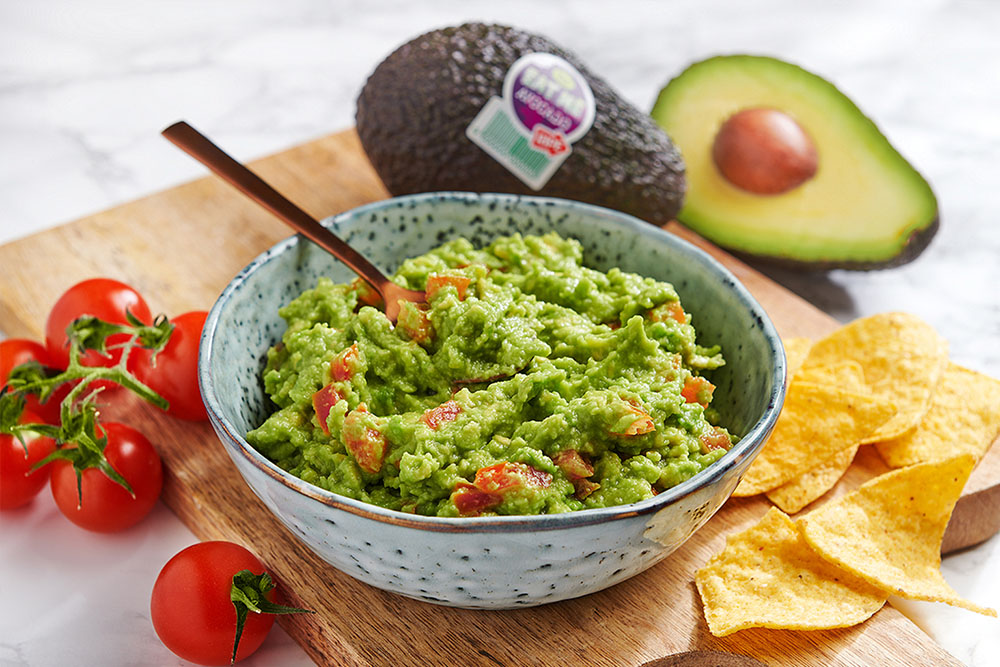

History
Ursprung, Reise und heutige Nutzung.

Ursprung
Die Avocado stammt aus Mittelamerika. Bereits indigene Kulturen bauten sie an und nutzten Kern, Schale und Fruchtfleisch.
Zeitleiste
- Vor hunderten Jahren: Anbau durch Maya und Azteken.
- 16. Jahrhundert: Verbreitung durch Handelsschiffe.
- 20. Jahrhundert: Züchtung moderner Sorten wie Hass.
- Heute: Weltweit beliebt in Küche und Snackkultur.